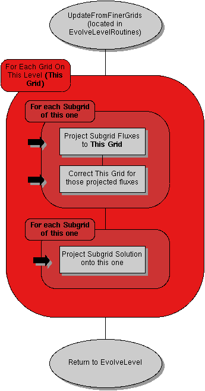

<map name="EvolveLevel_UpdateFromFinerGrids">
<area shape=poly coords="272,609, 265,594, 245,580, 214,572, 178,569, 142,572, 111,580, 91,594, 83,609, 91,624, 111,638, 142,646, 178,650, 214,646, 245,638, 265,624" href="EvolveLevel.html">
<area shape=rect coords="101,413, 245,458" href="EvolveLevel_ProjectSolutionToParentGrid.html">
<area shape=rect coords="101,278, 245,323" href="EvolveLevel_CorrectForRefinedFluxes.html">
<area shape=rect coords="101,215, 245,260" href="EvolveLevel_GetProjectedBoundaryFluxes.html">
<area shape=poly coords="272,42, 265,27, 245,13, 214,5, 178,2, 142,5, 111,13, 91,27, 83,42, 91,57, 111,71, 142,79, 178,83, 214,79, 245,71, 265,57" href="http://lca.ucsd.edu/projects/enzo/browser/public/trunk/src/enzo/EvolveLevelRoutinesOptimized.C">
</map>
